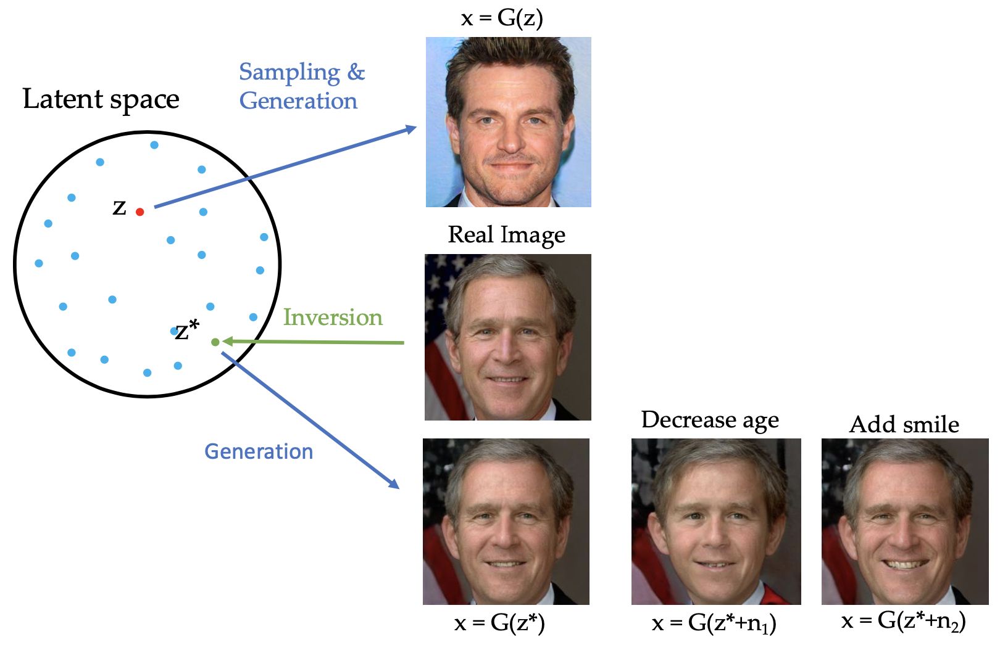
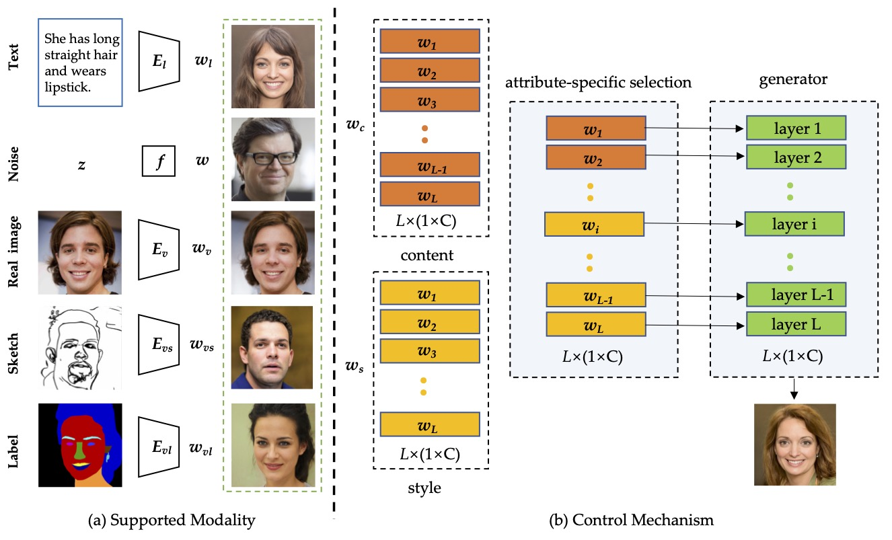
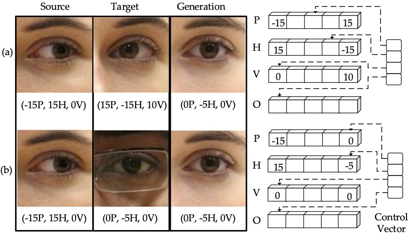
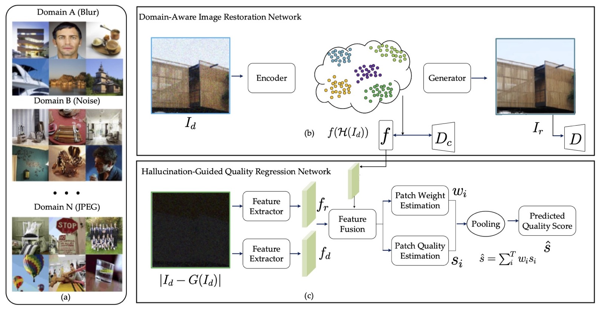

|
Weihao Xia
I am a research assistant at Tsinghua University.
I am interested in computer vision, computer graphic, and human–computer interaction. I am currently working on controllable, interpretable, and generalizable visual contents generation, especially generating 2D images, videos, or 3D shapes from multi-modal information (e.g., sketches, labels, or textual descriptions).
I’m also concerned about the Data Bias and Efficiency and AI Fairness, Privacy, and Transparency in generation tasks.
Email /
CV /
Google Scholar /
Github
|
|
|
Research Statement
I am interested in developing human-centeric general intelligent systems that are
- controllable for naive users to create, edit, share, and use visual contents
- interpretable about the components, principle, and predictions
- generalizable to real-world applications such as different domains with limited data
- trustworthy with no risks on fairness, privacy, and ethics
The ultimate vision of my research is to manifest the physical world through imagination.
|
|
News
[01/2021] Our survey on GAN Inversion is available.
[07/2020] One paper is accepted to ACM MM 2020 (poster).
[06/2020] One Paper is accepted to T-CSVT.
[05/2020] One Paper is accepted to Neural Networks.
|
|
Education
Tsinghua University
M.E. in Control Engineering, Department of Automation • Sep. 2016 - Jul. 2019
Sun Yat-Sen University
B.E. in Automation, School of Information Science and Technology • Sep. 2012 - Jul. 2016
|
|
Research Experience
Tsinghua University
Research Assistant • Dec. 2020 - Now
Adviser: Professor Yujiu Yang
MediaLab, HUAWEI Technologies Co., Ltd.
3D Vision Algorithm Engineer • Oct. 2019 - Dec. 2020
Tsinghua University
Research Assistant • Jun. 2019 - Oct. 2019
Adviser: Professor Yujiu Yang
SenseTime Group Limited
R&D Intern • Oct. 2017 - Mar. 2018
Adviser: Dr. Wenxiu Sun
|
| 
|
GAN Inversion: A Survey.
Weihao, Yulun Zhang, Yujiu Yang, Jing-Hao Xue, Bolei Zhou, Ming-Hsuan Yang.
arXiv.2101.05278 preprint
Paper /
Project
a comprehensive overview of GAN inversion methods with an emphasis on algorithms and applications.
|
| 
|
TediGAN: Text-Guided Diverse Face Image Generation and Manipulation.
Weihao, Yujiu Yang, Jing-Hao Xue, Baoyuan Wu.
arXiv.2012.03308 preprint
Paper /
Project /
Code /
Data /
Video
a novel method that unifies two different tasks (text-guided image generation and manipulation) into the same framework and achieves high accessibility, diversity, controllability, and accurateness for facial image generation and manipulation.
|
| 
|
InterpGaze: Controllable Continuous Gaze Redirection.
Weihao Xia, Yujiu Yang, Jing-Hao Xue, Wensen Feng.
ACM Multimedia (ACM-MM, acceptance rate 27.8%), 2020.
Paper /
Project /
Code and Data
we present a novel method that works on both precise redirection and continuous interpolation. With the well-disentangled and hierarchically-organized latent space, we can adjust the order and strength of each attribute by altering the additional control vector.
|
| 
|
Domain Fingerprints for No-reference Image Quality Assessment
Weihao Xia, Yujiu Yang, Jing-Hao Xue, Jing Xiao.
IEEE Transactions on Circuits and Systems for Video Technology (T-CSVT, JCR Q1, IF = 4.046), 2020.
Paper /
Project
we introduce the concept of domain fingerprint to the NR-IQA field, which is learned from image collections of different degradations and then used as the unique characteristics to identify the degradation sources and assess the quality of the image.
|
Updated January 2021.
Special thanks to Jon Barron for website template.
|
|